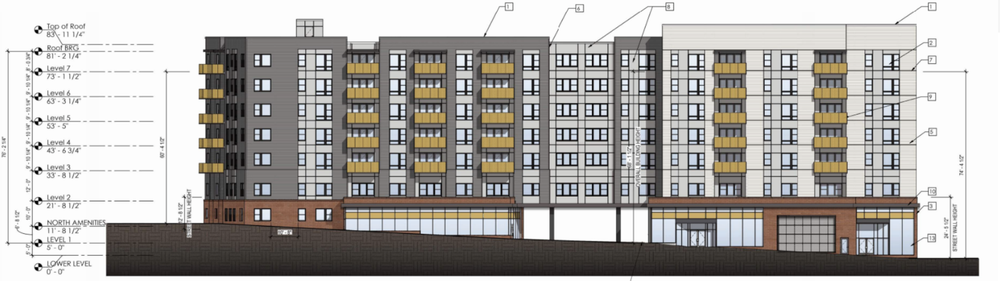
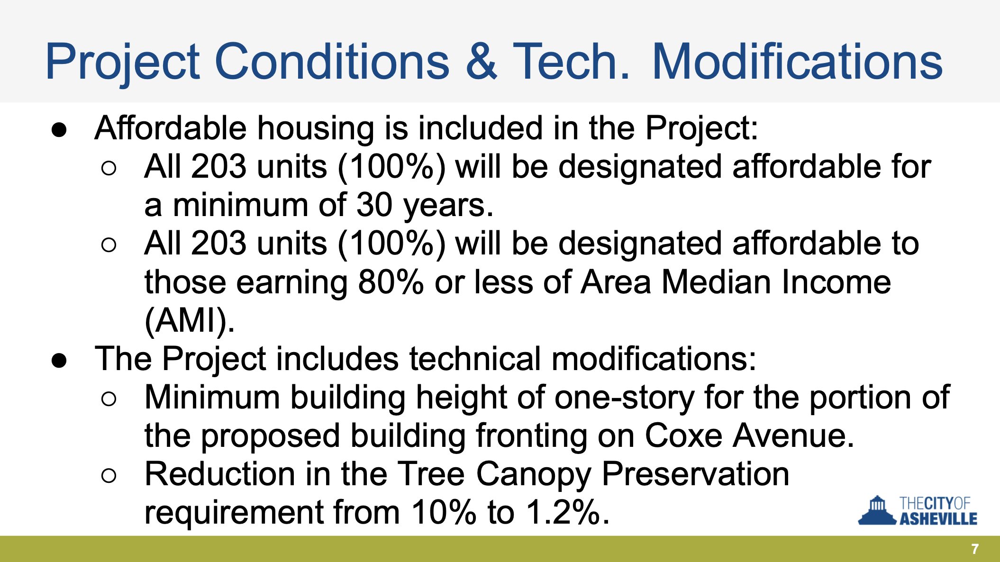

Asheville City Council - April 28th Meeting
May 3, 2026
Here’s what we found to be the most important housing-related items at Asheville’s City Council meeting of Tuesday, April 28, 2026.
Conditional Zoning for 50 Coxe Avenue
Outcome: Approved
Votes:
Unanimous in favor
There was just one public hearing tonight, and it was for a seven-story apartment building in downtown Asheville.
This project may seem familiar. It was conceived and is being developed by the Buncombe County government; it’s using county-owned land, and is partially funded by the 2022 county affordable housing bond. About two years ago, Buncombe County did some outreach about it to shape the details of the project. You might remember this particular poll from 2024, where the county asked residents how ambitious they wanted the project to be. (Most respondents chose option “B,” the larger plan.)

The project was ultimately approved unanimously by the City Council. And while the Planning and Zoning Commission hearing on the proposed homes earlier this Spring saw plenty of neighborhood opposition, that opposition did not manifest at the City Council hearing.
There was one odd thing that happened during the evening though, and it’s worth reviewing. For even though the end vote was unaminous, for a time during the public hearing it wasn’t clear that the city council was going to agree to approve the project at all.
A Question About the Project’s “Conditions”
50 Coxe Ave. will consist of more than two-hundred homes, and all of them will be offered at below-market rates. This is possible because of the county’s contributions to the project, but also because the project will receive the federal Low Income Housing Tax Credit, or LIHTC.
(Just about any project that is entirely below-market rate is an LIHTC project these days. Recall one from a couple of months ago in West Asheville near Patton Ave. and Louisiana Ave.)
For two years, the county had been advertising this project as meeting a range of income needs. Some homes would be restricted to individuals or families that make below thirty percent of the area median income (AMI), for example, while others might be restricted in a way that targets those that make below eighty percent. It’s common for developers, in order to conform to the rules of the LIHTC, to offer this kind of AMI spread across a project’s homes. (If you want to nerd out on these rules, you can find a summary of the LIHTC rules here.)
But some councilors were tripped up by a slide in the hearing presentation last night, and came to assume that all of the homes in the project would be for “80% AMI.” In concern, councilors then began debating the need for additional conditions to be added to the project, to allow for more socioeconomic diversity. After one confused councilor proposed the idea, others quickly approved of the need for this too.

The councilors rightly understood that housing choice vouchers are a mechanism that can bring lower-income residents into homes with higher rents, even if they misunderstood the AMI spread that these apartments were going to have. And so the debate turned around whether or not the developer could promise to give voucher-holders a “right of first refusal.” When the developer said that was infeasible, it set off even more confusion. For the record, LIHTC projects are required to accept vouchers. But the idea that one would actively try to fill vacant homes with voucher holders is one that seems to have been derived locally from some hearings in past years where the city was contributing subsidies and/or tax abatements to a project. That’s not the case for 50 Coxe Ave.
To be fair, we think the developer could have made things more clear by explaining both the county’s goals and the terms by which LIHTC dictates a certain AMI spread. In what may have been an attempt to save face, City Council ended up asking for a new project condition, in which the developer would maintain its current “targets” for the AMI spread as best as it could. (One of our sources at a local nonprofit home builder explained to us the importance of a developer having some flexibility when it comes to the precise details of an AMI spread beyond the general dictates of LIHTC.) This kind of condition is by its nature non-binding. But it seemed to be a way to move everyone past the conversation that probably shouldn’t have started in the first place.
* * *
It was great to see all seven Asheville City Councilors enthusiastic about this project. At the same time, the evening’s proceedings seemed to reinforce the idea that a conditional zoning must include a punishing and arbitrary gauntlet of demands. Worse, it suggested that this system, by its nature, seems designed to put important decisions in front of people who may not be best suited to deal in the weeds and on the fly. Very rarely, for example, might Council consult the planning department staff or the Community and Economic Development department staff when these conversations around conditions are happening.
Nevertheless, we look forward to seeing 50 Coxe Ave., and we hope that it will set a precedent for more homes downtown for all kinds of Ashevilleans. We thank Asheville City Council as well as the County’s leaders and staff—and the county’s voters, who approved of all of this—for seeing the importance of more housing.
Additional Media Coverage
- Blue Ridge Public Radio: “Asheville approves zoning for affordable downtown housing”
- Citizen Times: “100% affordable development slated for Downtown Asheville with city OK”